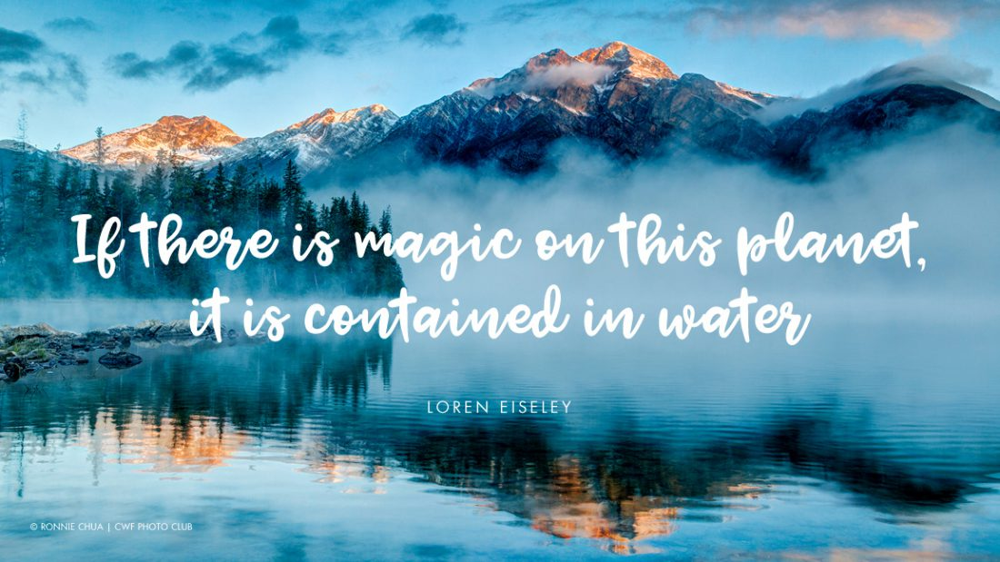
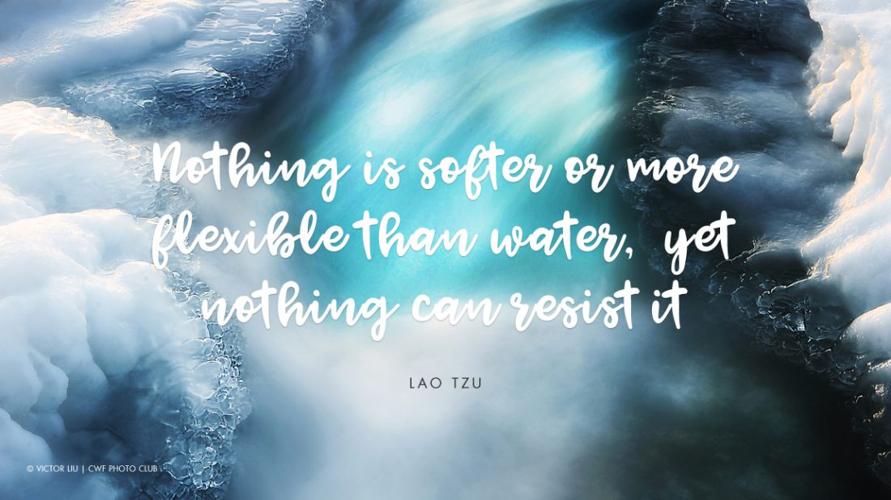
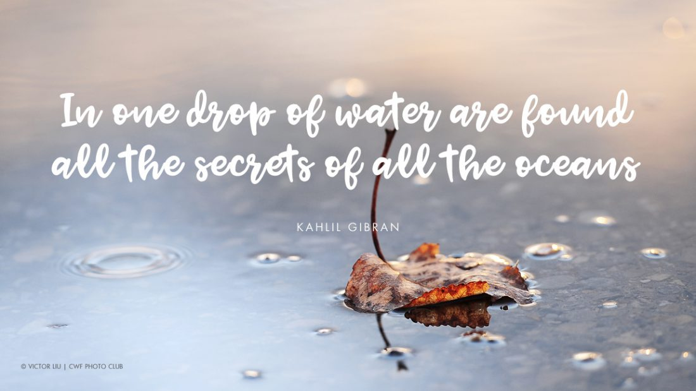
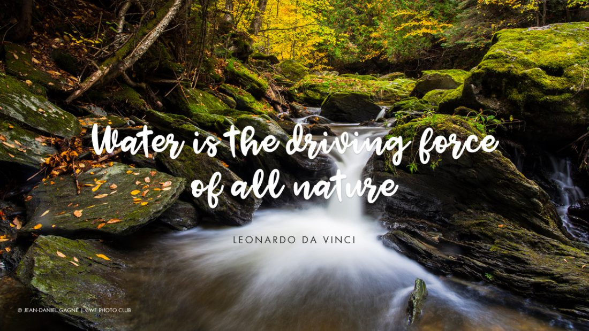

KENT’s Next-Gen RO Water Purifiers ensure 100% pure water using RO+UV+UF+TDS Control to remove Harmful Dissolved Impurities. Innovations like Zero Water Wastage Technology, Retention of Essential Minerals, UV-LED light in the storage tank and Digital Display of Purity further adds value by bringing in efficiency & performance in KENT’s RO Water Purifiers.

KENT’s UV Purifiers purifies water with TDS levels upto 100mg/litre & deliver 100% pure water. The cutting-edge technology of UV+UF+UV in-tank disinfects water, making it free from deadly bacteria & viruses. Features like Detachable Storage Tank, High Storage & Purification Capacity and Water Level Indicator are in place to meet your extra requirements.

In rural areas, contaminated water is a serious concern and to ensure that every individual is getting pure drinking water, KENT has come up with eco-friendly Gravity Water Purifiers. These non-electric purifiers are equipped with UF membrane that removes suspended impurities, bacteria & cyst to deliver pure and chemical-free water.

Because we don’t just deliver you a water purifier but give you the assurance that your water is as pure as nature intended it to be: The greatest gift to the humans! Since majority of the cities and trade flourished along the river banks, it is evident that the impact of water quality and purity cannot be ignored. KENT RO Systems took a step towards improving upon the degradation of the quality of domestic water supplies through innovation and created sophisticated ‘water purification systems’ so as to render a healthier, purer, and safer drinking water. KENT is an ISO 9001:2015 certified company and pioneer in bringing RO technology in India.
The technologically advanced water purifiers from KENT utilize multiple stages of purification
process to
remove dissolved and suspended impurities from water. KENT has received world’s top quality
certifications
and numerous global awards like Organization Of The Year, Swacch Bharat Ambassador, The Best
Domestic
Purifier Award, etc. that make us one of the most trusted water purifier brands in India.
KENT RO Water Purifiers utilize the futuristic multiple purification process to combine Reverse
Osmosis, UV
or UF in multiple stages and purify water from different sources like bore well, tap water and
municipal
supply water in your homes and offices.
Makes Water 100% pure through Multiple Purification Process

KENT purifiers removes bacteria, viruses, chemicals and even dissolved impurities such as arsenic, rust, pesticides, and fluorides to make water 100% pure and healthy that meets drinking water standards of IS:10500.

The RO purifier from KENT comes with a TDS control valve. The unique feature allows to control the desired TDS level in order to retain essential natural minerals in purified water.

Equipped with Zero Water Wastage Technology, KENT Grand Star recirculates the rejected water to the overhead tank using its own pump, leading to absolutely no wastage of water during the purification process.

KENT's awards-studded growth is a shining testimony to its phenomenal reach and acceptance by global audience. KENT has received many national & international prestigious awards & recognitions.

Boiling the water or using conventional purifiers (UV) only kills bacteria and viruses but does not remove dissolved impurities.However, RO Purifiers also remove harmful dissolved impurities besides removing bacteria and viruses.

KENT's Mineral ROTM Technology retains essential natural minerals in purified water using the TDS Controller, thereby providing 100% pure and tasty drinking water.

RO purification followed by UV and UF purification removes chemicals, pesticides, fluorides, dissolved impurities, kills bacteria & viruses to make water 100% pure and healthy to drink.

Get complete peace of mind with 1 Year Warranty + 3 Years Free Service AMC* FREE, worth Rs. 3000, on all domestic KENT RO Water Purifiers.
As per the Brand Trust Reports of 2015 & 2016, KENT is the most trusted water purifier brand in India. The achievements are proof that KENT gives the most purified water across the nation. KENT is trusted by millions, making it the World's Best Water Purifier.

FREE
SHIPPING
30 DAYS MONEY
BACK GUARANTEE
FREE STANDARD
INSTALLATION
EASY EMI
OPTIONS
SERVICE
WITHIN 48 HOURS
ONLINE
TRACKING ORDER